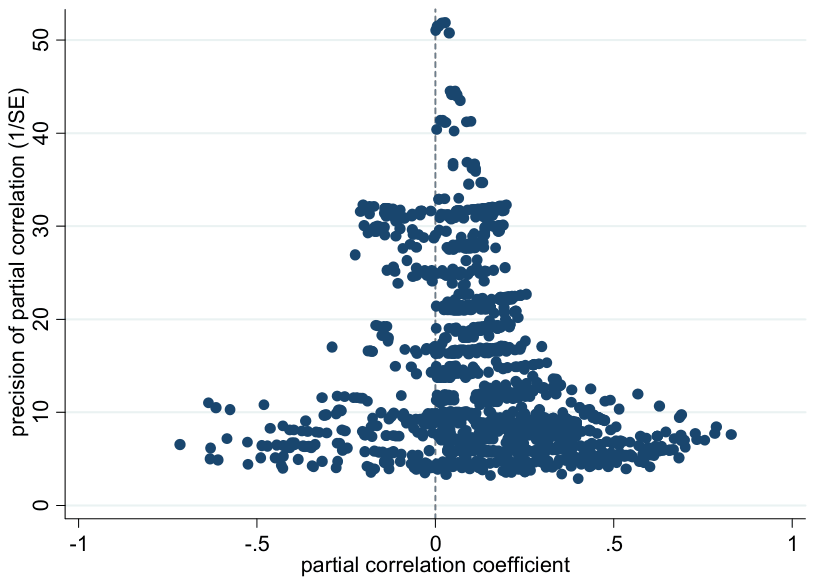

Financial Development and Economic Growth: A Meta-Analysis
Petra Valickova, Tomas Havranek, and Roman Horvath (2015), "Financial Development and Economic Growth: A Meta-Analysis." Journal of Economic Surveys 29(3), 506-526. https://doi.org/10.1111/joes.12068.
Petra Valickova
Charles University, Prague
Tomas Havranek
Czech National Bank and Charles University, Prague
Roman Horvath
Charles University Prague and IOS, Regensburg
Abstract
We analyze 1334 estimates from 67 studies that examine the effect of financial development on economic growth. Taken together, the studies imply a positive and statistically significant effect, but the individual estimates vary widely. We find that both research design and heterogeneity in the underlying effect play a role in explaining the differences in results. Studies that do not address endogeneity tend to overstate the effect of finance on growth. While the effect seems to be weaker in less developed countries, the effect decreases worldwide after the 1980s. Our results also suggest that stock markets support faster economic growth than other financial intermediaries.
Keywords: Development; Finance; Growth; Meta-analysis
1. Introduction
Does development of the financial sector support economic growth? On the one hand, we observe that financial markets in developed countries display substantial complexity, and some researchers suggest a causal effect from financial development to growth (for example, Levine et al., 2000; Rajan and Zingales, 1998). On the other hand, the complexity of financial markets may contribute to financial crises, which occur regularly around the world and often cause a long-lasting decrease in growth rates (Kindleberger, 1978).
In this paper, we quantitatively review the empirical literature on the finance–growth nexus. We focus on two fundamental questions. First, does financial development foster economic growth? Second, are some types of financial structure more conducive to growth than others? This is important in the light of the recent discussion showing conflicting findings about the importance of different financial structures on growth (see Demirguc-Kunt and Levine, 1996; Levine, 2002, 2003; Beck and Levine, 2004; Luintel et al., 2008; Demirguc-Kunt et al., 2013; among others).
To examine these issues, we use modern meta-analysis techniques. Although originally developed for use in medicine, meta-analysis is increasingly used in economic research (see, for example, Card and Krueger, 1995; Stanley and Jarrell, 1989; Stanley, 2001; Disdier and Head, 2008; Doucouliagos and Stanley, 2009; Daniskova & Fidrmuc, 2012). To our knowledge, however, a comprehensive meta-analysis of the relation between finance and growth has not yet been conducted, and we aim to bridge this gap. The closest paper to ours is that of Bumann et al. (2013), who use meta-analysis to document in the related literature a positive but relatively weak effect of financial liberalization on growth.
Our results suggest that the literature identifies an authentic positive link between financial development and economic growth. We argue that the estimates of the effect reported in the literature are not overwhelmingly driven by so-called publication selection bias, that is, the preference of researchers, referees or editors for positive and significant estimates. The results also indicate that the differences in the reported estimates arise not only from the research design (for example, from addressing or ignoring endogeneity), but also from real heterogeneity in the effect. To be specific, we find that the effect of financial development on growth varies across regions and time periods. The effect weakens somewhat after the 1980s and is generally stronger in wealthier countries, a finding consistent with Rousseau and Wachtel (2011). Our results also suggest that financial structure is important for the pace of economic growth, as suggested, for example, by Demirguc-Kunt and Levine (1996). We further find that stock market-oriented systems tend to be more conducive to growth than bank-oriented systems, which is in line with the theoretical model of Fecht et al. (2008) or empirical evidence by Luintel et al. (2008).
The remainder of this paper is structured as follows. In Section 2, we discuss how researchers measure financial development. In Section 3, we describe how we collect the data from the literature and we provide summary statistics of the data set. In Section 4, we test for the presence of publication selection. In Section 5, we examine the heterogeneity in the reported estimates. Section 6 concludes the paper, and the online appendix provides a list of studies included in the meta-analysis.
2. Measuring Financial Development
Our ambition in this section is not to provide an exhaustive survey on the methodology used in the literature to estimate the link between financial development and growth; in this respect, we refer the readers to thorough reviews by Levine (2005) and Ang (2008). Rather, we focus on the key aspect of this empirical literature: the measurement of financial development.1
The Financial Development Report 2011 published by the World Economic Forum defines financial development as ‘the factors, policies, and institutions that lead to effective financial intermediation and markets, as well as deep and broad access to capital and financial services’ (WEF, 2011, p. 13). In a similar vein, Levine (1999, p. 11) puts forward that an ideal measure of financial development would capture ‘the ability of the financial system to research firms and identify profitable ventures, exert corporate control, manage risk, mobilize savings, and ease transactions.’ These definitions assign a major role to the effectiveness of financial intermediaries and stock markets. Empirical studies must operationalize these definitions, however, and this may present the greatest challenge for the literature (Edwards, 1996). For example, high credit growth does not necessarily imply smooth financial intermediation as the use of the typical indicators, such as the credit-to-GDP (gross domestic product) ratio, implicitly assumes. In contrast, faster credit growth can indicate unbalanced allocation of financial resources and signal an upcoming financial crisis.2
The most commonly used indicators of financial development can be broadly defined as financial depth, the bank ratio, and financial activity. Financial depth, measured as the ratio of liquid liabilities of the financial system to GDP, reflects the size of the financial sector. Researchers employ various measures of financial sector depth, which are typically connected to the money supply: some authors use the ratio of M2 to GDP (for example, Giedeman and Compton, 2009; Anwar and Cooray, 2012), while others rely on M3 (Dawson, 2008; Huang and Lin, 2009; Hassan et al., 2011). The use of the broader aggregate, M3, is driven by the concern that the ratio of M2 to GDP does not appropriately capture the development of the financial system in countries where money is principally used as a store of value (Yu et al., 2012). To eliminate the pure transaction aspect of narrow monetary aggregates, some authors prefer the ratio of the difference between M3 and M1 to GDP (for example, Rousseau and Wachtel, 2002; Yilmazkuday, 2011). Financial depth, however, is a purely quantitative measure and does not reflect the quality of financial services. In addition, financial depth may include deposits in banks by other financial intermediaries, which raises the problem of double counting (Levine, 1997).
The second proxy used to measure financial development is the bank ratio, first applied by King and Levine (1993). The bank ratio is defined as the ratio of bank credit to the sum of bank credit and domestic assets of the central bank. The bank ratio stresses the importance of commercial banks compared with central banks in allocating excess resources in the economy. Nevertheless, Levine (1997) notes that there are weaknesses associated with the implementation of this measure, as financial institutions other than banks also provide financial functions. Moreover, the bank ratio does not capture to whom the financial system is allocating credit, nor does it reflect how well commercial banks perform in mobilizing savings, allocating resources, and exercising corporate control.
The third proxy used in the literature is financial activity. Researchers employ several measures of financial activity, such as the ratio of private domestic credit provided by deposit money banks to GDP (for example, Beck and Levine, 2004; Cole et al., 2008); the ratio of private domestic credit provided by deposit money banks and other financial institutions to GDP (employed by De Gregorio and Guidotti, 1995; Andersen and Tarp, 2003); and the ratio of credit allocated to private enterprises to total domestic credit (employed by King and Levine, 1993; Rousseau and Wachtel, 2011). These measures offer a better indication of the size and quality of services provided by the financial system because they focus on credit issued to the private sector. However, neither private credit nor financial depth can adequately assess the effectiveness of financial intermediaries in smoothing market frictions and channeling funds to the most productive use (Levine et al., 2000).
The empirical research in this area originally focused on banks. Later, researchers started to examine the effect of stock markets as well (Atje and Jovanovic, 1993), and as a consequence, proxies for stock market development have become increasingly used. The most commonly employed measures of stock market development are the market capitalization ratio (Shen and Lee, 2006; Chakraborty, 2010; Yu et al., 2012), stock market activity (Manning, 2003; Tang, 2006; Shen et al., 2011), and the turnover ratio (Beck and Levine, 2004; Liu and Hsu, 2006; Yay and Oktayer, 2009). Stock market capitalization refers to the overall size of the stock market and is defined as the total value of listed shares relative to GDP. The other two measures are associated more with liquidity. Stock market activity equals the total value of traded shares relative to GDP, while the turnover ratio is defined as the total value of traded shares relative to the total value of listed shares.
Alternative measures of financial development include, for example, the aggregate measure of overall stock market development (Naceur and Ghazouani, 2007), which considers market size, market liquidity, and integration with world capital markets; the share of resources that the society devotes to its financial system (Graff, 2003); the ratio of deposit money bank assets to GDP (Bangake and Eggoh, 2011); and financial allocation efficiency, which is defined as the ratio of bank credit to bank deposits.
The preceding paragraphs suggest that the literature offers little consensus concerning the most appropriate measure of financial development. For this reason, most researchers use several definitions of financial development to corroborate the robustness of their findings. Different indicators are also suited to different countries depending on whether the country features a financial system oriented on banks or on the stock market.
3. The Data Set of the Effects of Finance on Growth
As a first step in our meta-analysis, we collect data from the literature. In doing so, we focus on studies that estimate a growth model augmented for financial development:
where and denote country and time subscripts; represents a measure of economic development; represents a measure of financial development; is a vector of control variables accounting for other factors considered important in the growth process (for example, initial income, human capital, international trade, or macroeconomic and political stability); captures a common time-specific effect; denotes an unobserved country-specific effect; and is an error term. Note that (1) describes a general panel data setting, which can collapse to cross-sectional or time-series models. The cross-sectional and time-series studies are analyzed in the following sections, too.
We consider the empirical studies mentioned in the recent literature review of Ang (2008). Moreover, we search in the Scopus database and identify 451 papers for the keywords ‘financial development’ and ‘economic growth’. We read the abstracts of the papers and retain any studies that demonstrate a chance of containing empirical estimates regarding the effect of finance on growth. Overall, this approach leads to 274 potential studies. We terminate the literature search on April 10, 2012. Our approach here, as well as in other aspects of this meta-analysis, conforms to the Meta-Analysis of Economics Research Reporting Guidelines (Stanley et al., 2013).
We read the 274 potential studies to see whether they include a variant of the growth model as shown in equation (1). We only collect published studies because we consider publication status to be a simple indicator of study quality. Rusnak et al. (2013), for example, found that there is little difference in the extent of publication bias between published and unpublished studies, and we correct for the potential bias in any case. Furthermore, we only include studies reporting a measure of the precision of the effect of finance on growth (that is, standard errors, t-statistics, or p-values) because precision is required for modern meta-analysis methods. Finally, to increase the comparability of the estimated effects, we only include studies where the dependent variable is the growth rate of total GDP or GDP per capita.
The resulting data set contains 67 studies, which are listed in the online appendix; the data set is available in the online appendix at http://meta-analysis.cz/finance_growth. Because most studies report multiple estimates obtained from different specifications (for example, using a different definition of financial development), it is difficult to select a representative estimate for each study. For this reason, we collect all estimates, which provides us with 1334 unique observations.3 It seems to be best practice in recent meta-analyses to collect all estimates from the relevant studies (for instance, Disdier and Head, 2008; Doucouliagos and Stanley, 2009; Daniskova and Fidrmuc, 2012). We also codify variables reflecting study characteristics that may influence the reported estimates of the effect of finance on growth, and these variables are described in Section 5.
We are interested in coefficient from equation (1): the regression coefficient capturing the effect of financial development on growth. Nevertheless, as different studies use different units of measurement, the estimates are not directly comparable. To summarize and compare the results from various studies, we need standardized effect sizes. We use partial correlation coefficients (), as they are commonly used in economic meta-analyses (Doucouliagos, 2005; Doucouliagos and Ulubasoglu, 2006; Doucouliagos and Ulubaşoğlu, 2008; Efendic et al., 2011). The partial correlation coefficients can be derived from the t-statistics of the reported regression estimate and residual degrees of freedom (Greene, 2008):
where denotes the partial correlation coefficient from the ith regression estimate of the jth study; is the associated t-statistic; and is the corresponding number of degrees of freedom. The sign of the partial correlation coefficient remains the same as the sign of the coefficient , which is related to financial development in equation (1).
| Observations | |
|---|---|
| Number of studies | 67 |
| Number of estimates | 1334 |
| Median r | 0.14 |
| Averages | |
| Simple average r | 0.15 (0.095, 0.20) |
| Fixed-effects average r | 0.09 (0.088, 0.095) |
| Random-effects average r | 0.14 (0.129, 0.150) |
Notes: Figures in brackets denote 95% confidence intervals, r stands for partial correlation coefficient.
For each partial correlation coefficient, the corresponding standard error must be computed to employ modern meta-analysis techniques. The standard error can be derived employing the following formula (Fisher, 1954):
where represents the standard error of the partial correlation coefficient and is, again, the t-statistic from the ith regression of the jth study.
Because the partial correlation coefficients are not normally distributed, we use Fisher z-transformation to obtain a normal distribution of effect sizes (Card, 2011):
This transformation enables us to construct normal confidence intervals in the estimations. These z-transformed effect sizes are used for the computations and then transformed back to partial correlation coefficients for reporting.
Of the 1334 estimates of the effect of finance on growth in our sample, 638 are positive and statistically significant at the 5% level, 446 are positive but insignificant, 128 are negative and significant, and 122 are negative but insignificant. These numbers indicate substantial heterogeneity in the reported effects. Table 1 presents summary statistics for the partial correlation coefficients as well as their arithmetic and inverse variance weighted averages.
The arithmetic mean yields a partial correlation coefficient of 0.15 with a 95% confidence interval [0.1, 0.2]. The simple average of the partial correlation coefficients, however, suffers from several shortcomings. First, it does not consider the estimate’s precision, as each partial correlation coefficient is ascribed the same weight regardless of the sample size from which it is derived. Second, the simple average does not consider possible publication selection, which can bias the average effect. More appropriate summary statistics that account for the estimate’s precision can be computed using the fixed-effects or random-effects model, described in detail by Card (2011) and Borenstein et al. (2009).4
The fixed-effects model assumes that all reported estimates are drawn from the same population. To calculate the fixed-effects estimate, we weight each estimate by the inverse of its variance. The model yields a partial correlation coefficient of 0.09 with a 95% confidence interval [0.088, 0.095], which is only slightly less than the simple mean. This result indicates that when we give more weight to larger studies, the average effect decreases, which can be a sign of selection bias. Studies with small sample sizes must find a larger effect to offset high standard errors and achieve statistical significance. We explore this issue extensively in the next section.
All of our results reported so far rest on the assumption that all studies measure a common effect. This is not necessarily true, because studies use different data sets and examine different countries. In this case, the random-effects model, which accounts for between-study heterogeneity, may provide better summary statistics. The method yields a partial correlation of 0.14 with a 95% confidence interval [0.129, 0.15]. Nevertheless, the random-effects model assumes that the differences among the underlying effects are random and thus, in essence, unobservable. We proceed to model explicitly the heterogeneity among effect sizes using meta-regression analysis in the following sections.
4. Publication Bias
Publication bias, sometimes referred to as the file-drawer problem, arises when researchers, referees, or editors have a preference for publishing results that either support a particular theory or are statistically significant. In a survey of meta-analyses, Doucouliagos and Stanley (2013) examine the extent of publication bias in economics and find that the problem is widespread. For example, Stanley (2005) shows that the bias exaggerates the reported price elasticities of water demand fourfold. Havranek et al. (2012) find that after correcting for publication bias, the underlying price elasticity of gasoline demand is approximately half of the average published estimate. Havranek and Irsova (2012) report substantial publication bias in the literature on spillovers from foreign investment. The economic growth literature is no exception. For example, Doucouliagos (2005) finds bias in the literature regarding the relationship between economic freedom and economic growth, and Doucouliagos and Paldam (2008) identify bias in the research on aid effectiveness and growth.
Publication bias is particularly strong in fields that show little disagreement concerning the correct sign of the parameter. As a consequence, estimates supporting the prevailing theoretical view are more likely to be published, whereas insignificant results or results showing an effect inconsistent with the theory tend to be underrepresented in the literature. Nevertheless, not all research areas in economics are plagued by publication bias, as several meta-analyses demonstrate (for example, Doucouliagos and Laroche, 2003; Doucouliagos and Ulubaşoğlu, 2008; Efendic et al., 2011).
The commonly used tests of publication bias rest on the idea that studies with smaller samples tend to have large standard errors; accordingly, the authors of such studies need large estimates of the effect to achieve the desired significance level. Thus, authors with small samples may resort to a specification search, reestimating the model with different estimation techniques, data sets, or control variables until the estimates become significant. In contrast, studies that use more observations can report smaller effects, as standard errors are lower with more observations and statistical significance is then easier to achieve.
A typical graphical method used to examine possible publication bias is the so-called funnel plot (Stanley and Doucouliagos, 2010). On the horizontal axis, the funnel plot displays the standardized effect size derived from each study (in our case, partial correlation coefficients); on the vertical axis, it shows the precision of the estimates. More precise estimates will be close to the true underlying effect, while imprecise estimates will be more dispersed at the bottom of the figure. Therefore, in the absence of publication selection, the figure should resemble a symmetrical inverted funnel.5 The funnel plot for the literature on finance and growth is depicted in Figure 1.
Though the cloud of observations in Figure 1 resembles an inverted funnel, a closer visual inspection suggests an imbalance in the reported effects, as the right-hand side of the funnel appears to be heavier. This finding suggests that positive estimates may be preferably selected for publication. However, visual methods are subjective, and therefore, in the remainder of the section, we focus on formal methods of detection of and correction for publication bias. We follow, among others, Stanley and Doucouliagos (2010), who regress the estimated effect size on its standard error:

where is the total number of studies, is an index for a regression estimate in a th study, and each th study can include regression estimates. The coefficient measures the magnitude of publication bias, and denotes the true effect.
Nevertheless, because the explanatory variable in (5) is the estimated standard deviation of the response variable, the equation is heteroskedastic. This issue is, in practice, addressed by applying weighted least squares such that the equation is divided by the estimated standard error of the effect size (Stanley, 2008):
where is the standard error of the partial correlation coefficient . After transforming equation (5), the response variable in equation (6) is now the -statistic of the estimated coefficient from equation (1). The equation can be interpreted as the funnel asymmetry test (it follows from rotating the axes of the funnel plot and dividing the new vertical axis by the estimated standard error) and, therefore, a test for the presence of publication bias.6 Because we use multiple estimates per study, we should control for the potential dependence of estimates within a study by employing the mixed-effects multilevel model (Doucouliagos and Stanley, 2009; Havranek and Irsova, 2011)7:
The overall error term () from (6) now breaks down into two components: study-level random effects () and estimate-level disturbances (). This specification is similar to employing the random-effects model in a standard panel data analysis, except that the restricted maximum likelihood is used in the estimation to account for the excessive lack of balance in the data (some studies report many more estimates than other studies). The mixed-effects technique gives each study approximately the same weight if between-study heterogeneity is large (Rabe-Hesketh and Skrondal, 2008, p. 75.).
| (Effect) | 0.199***(0.018) |
|---|---|
| Constant (bias) | −0.353 (0.422) |
| Within-study correlation | 0.46 |
| Observations | 1334 |
| Studies | 67 |
Notes: The response variable is the -statistic of the estimated coefficient on financial development. Estimated using the mixed-effects multilevel model. Standard errors in parentheses; *** denotes significance at the 1% level.
If the null hypothesis of is rejected, we obtain formal evidence for funnel asymmetry, and the sign of the estimate of indicates the direction of the bias. A positive constant, , would suggest publication selection for large positive effects. A negative and statistically significant estimate of would, conversely, indicate that negative estimates are preferably selected for publication. Stanley (2008) uses Monte Carlo simulations to show that the funnel-asymmetry test is an effective tool for identifying publication bias.
Rejection of the null hypothesis would imply the existence of a genuine effect of finance on growth beyond publication bias. The test is known as the precision-effect test. Stanley (2008) examines the properties of the test in simulations and concludes that it is a powerful method for testing for the presence of a genuine effect and that it is effective even in small samples and regardless of the extent of publication selection.
Table 2 reports the results of the funnel asymmetry test. The constant term is insignificant, indicating no sign of publication selection. The statistically significant estimate of , however, indicates that the literature identifies, on average, an authentic link between financial development and economic growth. According to the guidelines of Doucouliagos (2011), the partial correlation coefficient of 0.2 represents a moderate effect of financial development on economic growth. The guidelines are based on a survey of 41 meta-analyses in economics and the distribution of the reported partial correlations in these studies. The partial correlation coefficient is considered 'small' if the absolute value is between 0.07 and 0.17 and 'large' if the absolute value is greater than 0.33. If the partial correlation coefficient lies between 0.17 and 0.33, which is the case here, Doucouliagos (2011) considers the effect to be 'medium'.
Using the likelihood ratio test, we reject the null hypothesis of no between-study heterogeneity at the 1% level, which is why we report the mixed-effects multilevel model instead of ordinary least squares (OLS). Nevertheless, the specification we use assumes that all heterogeneity in the results is caused only by publication bias and sampling error, an assumption that is not realistic.
5. Multivariate Meta-Regression
In many studies that examine the finance–growth nexus, researchers emphasize that the estimated effect depends on the estimation characteristics, the proxy measures for financial development, the data span, and the countries included in the estimation (see Beck and Levine, 2004; Ang, 2008; Yu et al., 2012; among others). To determine whether the results systematically vary across the different contexts in which researchers estimate the effect, we employ multivariate meta-regression analyses. The differences in the reported results may stem either from heterogeneity in research design or from real economic heterogeneity across countries and over time. We follow Havranek and Irsova (2011) and estimate the following equation:
where stands for the set of moderator variables that are assumed to affect the reported estimates, each weighted by to correct for heteroskedasticity, and denotes the total number of moderator variables. The specification assumes that publication bias () varies randomly across studies, and we only model systematic variations in the true effect size ().
Table 3 presents the moderator variables that we codified. We divide them into two broad categories: variables related to differences in research design and variables related to real economic differences in the underlying effect of finance on growth.
The variables reflecting differences in research design can be divided into four broad categories: differences in specification, data characteristics, estimation characteristics, and publication characteristics. Various measures that approximate the degree of financial development have been used in the empirical literature. To account for the different measures, we construct several dummy variables based on the discussion in Section 2. Moreover, we introduce dummy variables to capture the definition of the dependent variable in equation (1). Researchers typically use GDP growth or per capita GDP growth measured in either real or nominal terms.
We construct moderator variables that capture the differences in the regressions included in the reported growth regressions. Our motivation for including these variables is that model uncertainty has been emphasized as a crucial aspect in estimating growth regressions (Levine and Renelt, 1992). We include variables that reflect the number of regressors in primary studies and dummy variables, such as Macroeconomic stability, Political stability, and Financial crisis, that correspond to the inclusion of important control variables.
In addition, we control for data characteristics, such as the number of countries included in the regressions, data frequency, and sample size. Time-series models usually use annual data, and studies with panel data commonly employ values averaged over five-year periods, whereas cross-country regressions often use values averaged over several decades. Beck and Levine (2004) find that using annual data rather than data averaged over five-year periods results in a breakdown of the relationship between financial development and economic growth. Some authors emphasize the importance of using low-frequency data to reduce the effect of business cycles and crises, and thus, they focus entirely on the long-run effects of growth (see Beck and Levine, 2004; Levine, 1999; among others). The dummy variable Homogeneous is used to assess whether mixing too heterogeneous countries may lead to systematically different estimates. We consider that the primary studies used a homogeneous sample of countries if a cross-country sample for a particular region is used (according to the definition of the World Bank: for example, Middle East and North Africa, or Latin America and Caribbean), if only developed or transition or developing countries are included, or if the focus of the primary study is a single country. For example, Ram (1999) points to structural heterogeneity across the countries pooled by King and Levine (1993).
As some estimation techniques used in the literature do not address the simultaneity bias in the finance–growth nexus, we control for different econometric methods employed in primary studies. In cross-sectional studies, some authors use the initial values of financial development and other explanatory variables in the regression to address the simultaneity bias (for example, King and Levine, 1993; Deidda and Fattouh, 2002; Rousseau and Wachtel, 2011). Other studies use the country's legal origin as an instrumental variable for financial development (for example, Levine, 1999; Levine et al., 2000). In addition, panel data techniques may be more successful in dealing with omitted variable bias.
We include journal impact factors to capture differences in quality not covered by the variables reflecting methodology. We use the recursive RePEc impact factor of the outlet where each study was published.
| Variable | Description | Mean | Std. Dev. |
|---|---|---|---|
| t-statistic | The t-statistic of the estimated coefficient on financial development; the response variable | 1.77 | 3.49 |
| 1/SEr | The precision of the partial correlation coefficient | 14.68 | 9.91 |
| Data characteristics | |||
| No. of countries | The number of countries included in the estimation | 43.13 | 30.19 |
| No. of time units | The number of time units included in the estimation | 11.06 | 18.69 |
| Sample size | The logarithm of the total number of observations used | 4.96 | 1.27 |
| Length | The number of years in time unit | 7.27 | 10.36 |
| Log | = 1 if logarithmic transformation is applied and 0 otherwise | 0.58 | 0.49 |
| Panel (base category) | = 1 if panel data are used and 0 otherwise | 0.62 | 0.48 |
| Cross-section | = 1 if cross-sectional data are used and 0 otherwise | 0.24 | 0.43 |
| Time series | = 1 if time-series data are used and 0 otherwise | 0.13 | 0.33 |
| Homogeneous | = 1 if homogeneous sample of countries is considered and 0 otherwise | 0.34 | 0.47 |
| Nature of the dependent variable | |||
| Real GDP per capita (base category) | = 1 if dependent variable in primary regression is growth rate of real GDP per capita and 0 otherwise | 0.72 | 0.45 |
| Nominal GDP per capita | = 1 if dependent variable in primary regression is growth rate of GDP per capita and 0 otherwise | 0.08 | 0.27 |
| Nominal GDP | = 1 if dependent variable in primary regression is growth rate of GDP and 0 otherwise | 0.14 | 0.35 |
| Real GDP | = 1 if dependent variable in primary regression is growth rate of real GDP and 0 otherwise | 0.06 | 0.24 |
| Proxy measures for financial development | |||
| Depth (base category) | = 1 if financial depth is used as indicator of FD and 0 otherwise | 0.33 | 0.47 |
| Financial activity | = 1 if private domestic credit provided by deposit money banks to GDP is used as indicator of FD and 0 otherwise | 0.14 | 0.35 |
| Private credita | = 1 if private credit by deposit money banks and other financial intermediaries is used as indicator of FD and 0 otherwise | 0.10 | 0.30 |
| Bank | = 1 if bank ratio is used as indicator of FD and 0 otherwise | 0.06 | 0.24 |
| Variable | Description | Mean | Std. Dev. |
|---|---|---|---|
| Private/domestic credit | = 1 if private credit/domestic credit is used as indicator of FD and 0 otherwise | 0.03 | 0.17 |
| Market capitalization | = 1 if stock market capitalization is used as indicator of FD and 0 otherwise | 0.06 | 0.23 |
| Market activity | = 1 if stock market activity is used as indicator of FD and 0 otherwise | 0.07 | 0.25 |
| Turnover ratio | = 1 if turnover ratio is used as indicator of FD and 0 otherwise | 0.09 | 0.29 |
| Other | = 1 if other indicator of FD is used as indicator of FD and 0 otherwise | 0.12 | 0.32 |
| Nonlinear | = 1 if coefficient is derived from non-linear specification of financial development and 0 otherwise | 0.22 | 0.42 |
| Changes | = 1 if financial development is measured in changes rather than levels and 0 otherwise | 0.06 | 0.23 |
| Joint | = 1 if more than one financial development indicator is included in regression and 0 otherwise | 0.50 | 0.50 |
| Estimation characteristics | |||
| OLS | = 1 if ordinary least squares estimator is used for estimation and 0 otherwise | 0.42 | 0.49 |
| IV | = 1 if instrumental variables estimator is used for estimation and 0 otherwise | 0.17 | 0.37 |
| FE | = 1 if fixed-effects estimator is used for estimation and 0 otherwise | 0.08 | 0.27 |
| RE | = 1 if random-effects estimator is used for estimation and 0 otherwise | 0.02 | 0.13 |
| GMM (base category) | = 1 if GMM estimator is used for estimation and 0 otherwise | 0.30 | 0.46 |
| Endogeneityb | = 1 if the estimation method addresses endogeneity and 0 otherwise | 0.51 | 0.50 |
| Conditioning variables characteristics | |||
| Regressors | The total number of explanatory variables included in the regression (excluding the constant term) | 7.97 | 3.77 |
| Macrostability | = 1 if primary study controls for macroeconomic stability in conditioning data set and 0 otherwise | 0.71 | 0.45 |
| Political Stability | = 1 if primary study controls for political stability and 0 otherwise | 0.13 | 0.34 |
| Trade | = 1 if primary study controls for effects of trade and 0 otherwise | 0.53 | 0.50 |
| Initial income | = 1 if primary study controls for level of initial income and 0 otherwise | 0.71 | 0.45 |
| Human capital | = 1 if primary study controls for level of human capital and 0 otherwise | 0.67 | 0.47 |
| Investment | = 1 if primary study controls for the amount of investment (share of investment in GDP or the amount of foreign direct investment in GDP) and 0 otherwise | 0.30 | 0.46 |
| Financial crisis | = 1 if dummy variable for some indicators of financial fragility is included in estimation and 0 otherwise | 0.03 | 0.17 |
| Time dummy | = 1 if time dummies are included in estimation and 0 otherwise | 0.15 | 0.35 |
| Variable | Description | Mean | Std. Dev. |
|---|---|---|---|
| Publication characteristics | |||
| Journal impact factor | The recursive RePEc impact factor of the outlet as of July 2012 | 0.33 | 0.42 |
| Publication year | The year of publication (the mean is subtracted) | 0.00 | 1.05 |
| Real factors: differences between time periods | |||
| 1960s | = 1 if data from 1960s are used and 0 otherwise | 0.35 | 0.48 |
| 1970s | = 1 if data from 1970s are used and 0 otherwise | 0.78 | 0.42 |
| 1980s (base category) | = 1 if data from 1980s are used and 0 otherwise | 0.94 | 0.24 |
| 1990s | = 1 if data from 1990s are used and 0 otherwise | 0.79 | 0.41 |
| 2000s | = 1 if data from 21st century are used and 0 otherwise | 0.50 | 0.50 |
| Real factors: differences between regions | |||
| East Asia & Pacific (base category) | = 1 if countries from East Asia and Pacific are included in sample and 0 otherwise | 0.75 | 0.43 |
| South Asia | = 1 if countries from South Asia are included in sample and 0 otherwise | 0.70 | 0.46 |
| Asia | = 1 if Asian countries are included in sample and 0 otherwise | 0.70 | 0.46 |
| Europe | = 1 if European countries are included in sample and 0 otherwise | 0.70 | 0.46 |
| Latin America | = 1 if Latin American & Caribbean countries are included in sample and 0 otherwise | 0.75 | 0.43 |
| MENA | = 1 if Middle East & North African countries are included in sample and 0 otherwise | 0.72 | 0.45 |
| Sub-Saharan Africa | = 1 if sub-Saharan African countries are included the sample and 0 otherwise | 0.71 | 0.45 |
| Rest of the world | = 1 if rest of world (mainly high-income OECD countries) is included in sample and 0 otherwise | 0.66 | 0.47 |
Note: FD stands for financial development. aPrivate credit by deposit money banks and other financial intermediaries to GDP was used as an indicator of financial activity along with private credit provided by deposit money banks to GDP. bPrimary studies address endogeneity by applying the general method of moments, the instrumental variable estimator, or by estimating a lagged effect of financial development on economic growth.
While there are many ways to measure impact factors, we select the one from RePEc because it reflects the quality of citations and covers almost all economic journals.8 We also include the variable Year of publication, for two reasons. First, we hypothesize that the perception of the importance of financial development in economic growth may have changed over time. If this is the case, results that are in accordance with the prevailing view may be more likely to be published. Second, the published pattern in the literature may also have changed because recent studies could have benefited from the application of new econometric techniques, which consider simultaneity or omitted variable biases as well as unobserved country characteristics.
Financial development may have different growth effects in different regions and at different times. For example, Patrick (1966) and, more recently, Deidda and Fattouh (2002) suggest that the role of financial development in economic growth changes over the stages of economic development. Several studies find that the growth effect of financial sector development varies across countries (for instance, De Gregorio and Guidotti, 1995; Odedokun, 1996; Ram, 1999; Manning, 2003; Rousseau and Wachtel, 2011; Yu et al., 2012). To address the possibility that the finance–growth nexus may be heterogeneous across different geographic regions, we include regional dummies. To investigate the effect of finance on growth across different time periods, we construct dummy variables reflecting the following decades: 1960s, 1970s, 1990s, and 2000s, with the 1980s as the base. We select the 1980s as the base period to test the hypothesis of Rousseau and Wachtel (2011), who argue that the effect of financial development on economic growth has declined since the 1980s.
Table 4 presents the results of the multivariate meta-regression. The results suggest that heterogeneity in the estimated effects arises not only because of the differences in research design, but also because of real factors, such as differences between regions and time periods. The results of the meta-regression analysis with all potentially relevant moderator variables are listed in the third column of Table 4. The final specification in the rightmost column of Table 4 is obtained by sequentially omitting the least significant moderator variables. We follow the general to specific modeling approach as it represents a common practice in meta-regression analysis for obtaining a parsimonious model that contains only the most important variables (see, for example, Doucouliagos and Stanley, 2009). Based on the likelihood ratio test, we reject the null hypothesis of no between-study heterogeneity at the 1% level, which supports the use of the mixed-effects multilevel model rather than OLS. As a robustness check, however, we also estimate our regression model using OLS with standard errors clustered at the study level. The findings confirm our baseline results, even though the estimated standard errors are, for some variables, a bit larger. The OLS results are presented in the online appendix http://meta-analysis.cz/finance_growth.
Before turning to the discussion of our results concerning heterogeneity, it is worth noting that the coefficient controlling for publication bias in Table 4 becomes large and statistically significant when study aspects (additionally to precision) are accounted for. This is puzzling, because our analysis in the previous section implies that estimates of the effect of finance on growth are little correlated with their standard errors. The likely explanation is that some aspects of data or methodology may be associated with publication bias, or small-sample and other biases. Whatever is the source of the large constant reported in Table 4, it does not affect much our estimate of the effect of finance on growth; evaluated at sample means, it is on average still around 0.2 and thus close to the simple mean of partial correlation coefficients.
We identify several variables that significantly influence the reported effect of financial development on economic growth, and find that the effect varies across regions. Therefore, researchers who combine different regions should be careful when interpreting their results. For example, the effects seem to be greater in Latin America and Europe, but smaller in sub-Saharan Africa, as compared to East Asia. Using the results of the specific regression reported in the last column of Table 4, we can compute the implied value of the partial correlation coefficient for each region. That is, we evaluate the estimated regression at sample means and plug in value 1 for the region in question and the value of 0 for all other regions. For our baseline category, East Asia, we get 0.13. The estimate rises to 0.26 for Europe and 0.23 for Latin America, but declines to 0.04 for sub-Saharan Africa. Note that the region-specific estimates evaluated at sample means are imprecise, with standard errors around 0.65 in all cases. The differences in effects across regions, however, are statistically significant.
| Moderator Variables | All Variables | Specific | ||
|---|---|---|---|---|
| Differences due to research design | Differences in dependent variable | Nominal GDP per capita | 0.041(0.064) | |
| Nominal GDP | 0.314***(0.071) | 0.242***(0.062) | ||
| Real GDP | 0.208***(0.072) | 0.157**(0.064) | ||
| Data characteristics | No. of countries | −0.002***(0.000) | −0.002***(0.000) | |
| No. of time units | 0.000(0.000) | |||
| Sample size | −0.237***(0.024) | −0.237***(0.022) | ||
| Length | 0.012***(0.002) | 0.012***(0.002) | ||
| Log | −0.101**(0.043) | −0.069*(0.037) | ||
| Cross-section | 0.065**(0.032) | 0.070**(0.031) | ||
| Time series | 0.449***(0.158) | 0.408***(0.151) | ||
| Homogeneous | −0.037(0.024) | |||
| Measures of FD | Financial activity | −0.029***(0.011) | −0.031***(0.010) | |
| Private credit | 0.037**(0.015) | 0.037**(0.015) | ||
| Bank | 0.001(0.015) | |||
| Private/domestic credit | −0.053**(0.024) | −0.051**(0.024) | ||
| Market capitalization | 0.128***(0.016) | 0.128***(0.016) | ||
| Market activity | 0.151***(0.014) | 0.148***(0.013) | ||
| Turnover ratio | 0.087***(0.015) | 0.087***(0.015) | ||
| Other | 0.077***(0.013) | 0.077***(0.013) | ||
| Nonlinear | −0.006(0.010) | |||
| Changes | 0.084(0.066) | |||
| Joint | −0.044**(0.017) | −0.048***(0.016) | ||
| Differences due to research design | Estimation characteristics | OLS | 0.069*(0.038) | 0.028***(0.010) |
| IV | 0.002(0.030) | |||
| FE | 0.040(0.037) | |||
| RE | 0.050(0.040) | |||
| Endogeneity | 0.032(0.039) | |||
| Conditioning variables | Regressors | −0.008**(0.003) | −0.006**(0.003) | |
| Macrostability | 0.029(0.022) | |||
| Political stability | 0.036(0.045) | |||
| Trade | 0.013(0.020) | |||
| Initial income | 0.188***(0.054) | 0.184***(0.049) | ||
| Human capital | 0.081**(0.036) | 0.092***(0.035) | ||
| Investment | −0.242***(0.052) | −0.225***(0.047) | ||
| Financial crisis | 0.232***(0.067) | 0.262***(0.061) | ||
| Time dummy | 0.046(0.035) | |||
| Publication characteristics | Journal impact factor | 0.109**(0.044) | 0.079*(0.042) | |
| Publication year | 0.029***(0.006) | 0.022***(0.005) | ||
| Differences due to real factors | Differences between time periods | 1960s | −0.185***(0.035) | −0.144***(0.030) |
| 1970s | 0.153***(0.039) | 0.120***(0.036) | ||
| 1990s | −0.077*(0.046) | −0.118***(0.034) | ||
| 2000s | −0.069(0.043) |
| Moderator Variables | All Variables | Specific | ||
|---|---|---|---|---|
| Differences between regions | South Asia | −0.013(0.041) | ||
| Asia | 0.003(0.032) | |||
| Europe | 0.132***(0.033) | 0.131***(0.020) | ||
| Latin America | 0.104***(0.031) | 0.108***(0.027) | ||
| MENA | 0.034(0.027) | 0.047*(0.025) | ||
| Sub-Saharan Africa | −0.091**(0.037) | −0.082***(0.027) | ||
| Rest of the world | −0.032(0.032) | |||
| 1/SEr | 1.804***(0.151) | 1.805***(0.133) | ||
| Constant | −8.032***(0.629) | −7.754***(0.587) | ||
| Observations | 1334 | 1334 | ||
| Studies | 67 | 67 | ||
| Within-study correlation | 0.66 | 0.62 |
Notes: Dependent variable: t-statistic of estimated coefficient related to financial development. Estimated by mixed-effects multilevel model. Standard errors in parentheses; ***,**,* denote significance at the 1%, 5%, and 10% level, respectively. FD stands for financial development.
This finding suggests that the growth effects depend on the level of economic development, which is stressed by Rioja and Valev (2014), Ram (1999), Rousseau and Wachtel (2011), Manning (2014), and Yu et al. (2012), among others. In contrast, the results are not in accordance with De Gregorio and Guidotti (1995), who find that the impact of financial development on growth is negative for a panel of Latin American countries. Our results on sub-Saharan Africa, conversely, give support to the previous research of Levine et al. (2000). It also seems that the growth effect of financial development declined in the 1990s compared to the 1980s, which is consistent with Rousseau and Wachtel (2011).
Our results suggest that the number of countries, as well as the sample size included in the analysis, matters for the reported results. Cross-sectional studies and time-series studies report, on average, larger effects than studies using panel data. The variable Length, which stands for the number of years in the data set, is found to be positive and significant, which corresponds to the findings of Calderon and Liu (2003). That is, studies that examine longer time horizons generally report larger effects. Studies using the log of the dependent variable report, on average, smaller finance–growth effects than do other studies.
Specifications that use measures of stock market development, such as market capitalization, market activity, or turnover ratio, typically yield greater growth effects compared to financial depth, which we use as the base category. Therefore, our results suggest that the growth effects of stock markets are greater than the effects caused by other financial intermediaries. In addition, we also estimate a regression model for which we use different measures of financial development and create only two dummy variables, one for studies examining stock market development and the other one for studies examining banking sector development. Our robustness check (results available upon request) show a positive coefficient of 0.06 for stock market studies and a negative coefficient of –0.09 for banking sector studies, both statistically significant at the 1% level. The issue of the importance of financial structure has received considerable attention in primary studies. Demirguc-Kunt and Levine (1996), Levine (2002, 2003), and Beck and Levine (2004) show that it is the provision of financial services rather than financial structure that affects economic growth. On the other hand, Arestis et al. (2010) and Ergungor (2008) argue that financial structure matters.
Luintel et al. (2008) and Arestis et al. (2010) find that financial structure is irrelevant for growth only if cross-country heterogeneity is ignored. Once the panel econometric framework explicitly accounts for heterogeneity, financial structure gains importance. Ergungor (2008) shows that the effect of financial structure on economic growth depends on the level of inflexibility of judicial environments. If inflexibility is high, bank-based systems are more conducive to growth. Otherwise, stock markets are more supportive for growth. The results of Peia and Rozsbach (2013) also suggest that banks and stock markets influence economic growth differently.
Demirguc-Kunt et al. (2013) show that the effect of banks and stock markets on economic growth depends on the stage of economic development. The effect of bank development on economic growth decreases with economic development. On the other hand, the pattern for stock markets is opposite and the effect increases as the country develops. Therefore, the results suggest that there exists a certain optimal financial structure. In addition, Demirguc-Kunt et al. (2013) find that deviation from this optimal financial structure is costly in terms of economic growth. This is in line with the prediction of the theoretical model by Fecht et al. (2008), who show that stock markets may have greater effects on economic growth than banks.
Our results suggest that it is important to control for endogeneity when estimating the effect of finance on growth. Studies using OLS find, on average, larger effects than studies that account for endogeneity in some way—for example, using instrumental variables, panel data methods, or other more advanced techniques. Both moderator variables related to publication characteristics, namely, Journal impact factor and Publication year, are significant and positive. This finding suggests that studies published in journals with a higher impact factor report, on average, larger effects and that more recent studies report, on average, larger effects than earlier studies.
The reported estimates of the finance–growth relationship are sensitive to the set of conditioning variables included in the growth regressions, a finding that corroborates the findings of Levine and Renelt (1992). If primary studies account for the level of initial income, include a variable related to human capital, or control for financial fragility, they are likely to yield larger effects. On the other hand, specifications that control for the amount of investment in the economy tend to report lower effects. This result may be because the level of investment in the economy is a function of financial development.
The online appendix (http://meta-analysis.cz/finance_growth) includes additional regressions and sensitivity analysis. We reestimate the funnel asymmetry test reported in Table 2 using subsamples of coefficients reported for different regions and subsamples of different decades of data that are examined in the primary studies. The pattern of publication bias varies little across regions and time periods (we only get a statistically significant estimate of the extent of publication bias for studies using data from the 2000s). Concerning the puzzling negative (and sometimes even significant) estimates in our sample, which account for almost 20% of the data, we find that they are reported more often in recent periods, which might suggest that the increasing sophistication of financial systems increases the risks of adverse effects.
Furthermore, we reestimate the multivariate meta-regression reported in Table 4 using OLS instead of mixed effects and also include a nonweighted meta-regression. For interpretation we prefer the weighted mixed effects presented in the main body of the paper, because they correct for heteroskedasticity and take into account within-study dependence of the estimates. The sensitivity checks provide less statistical significance for the estimated coefficients of several meta-regression variables. Nevertheless, focusing on the sensitivity checks would not change our main results; that is, the effect of estimation methods on reported coefficients, the importance of the choice of the measure of financial development, changes in the reported effect of financial development on growth in time, and heterogeneity in the reported effect across regions.
6. Conclusions
We perform a meta-regression analysis of studies that investigate the effect of financial development on economic growth. We observe substantial heterogeneity in the reported estimates and find that approximately 50% of them report a positive and statistically significant effect. Nevertheless, using meta-analysis methods, we show that the literature as a whole documents a moderate, but statistically significant, positive link between financial development and economic growth. In addition, we subject the literature to several tests for publication bias and do not find strong evidence that researchers, referees, or editors demonstrate a preference for certain types of results.
After examining 67 studies that provide 1334 estimates of the effect of finance on growth, we find that the heterogeneity in the reported effects is driven by both real factors and differences in research design. The finance–growth nexus varies across regions, which challenges the assumption of a common parameter used for heterogeneous countries in growth regressions. For example, we find that the growth effect of financial development is strong in European and Latin American countries but weak in sub-Saharan Africa. Our results also suggest that the beneficial effect of financial development decreased in the 1990s, but seems to have rebounded in the last decade to the level of the 1980s.
We find that how researchers measure financial development does play an important role. Measures based on stock markets are associated with greater growth effects than measures based on banks. As a consequence, our results give support to the hypothesis that financial structure is important for the pace of economic development, as the contribution of stock markets to the growth process tends to be higher than that of other financial intermediaries.
With respect to the differences in research design, our meta-regression analysis provides evidence that the reported estimates of the finance–growth relationship depend on the set of control variables included in the growth regressions. Studies that control for the level of initial income, human capital, and financial fragility tend to report larger effects, which suggests that regression model uncertainty and omitted variable bias are important factors driving the estimated effect of financial development on growth.
In addition, our results show that addressing endogeneity is important for correct estimation and that studies that ignore endogeneity issues tend to exaggerate the size of the effect of financial development. The data frequency used in the estimation also influences the reported estimates. We find that studies that use averages of observations across longer periods (thus reducing the impact of the business cycle or short-term financial volatility on the estimates) and that use longer data samples tend to report greater effects of finance on growth.
Acknowledgements
We thank Chris Doucouliagos, Jarko Fidrmuc, James Laurenceson, Tomas Konecny, Oana Peia, Martin Strieborny, Borek Vasicek, and seminar participants at Charles University and the Czech National Bank for helpful comments. We thank the Czech National Bank for support. Horvath acknowledges support from the Czech Science Foundation (Grant No. 402/12/1993); Havranek acknowledges support from the Czech Science Foundation (Grant. No. P402/11/0948). An online appendix providing the data set, additional results, and the list of studies included in the meta-analysis is available at http://meta-analysis.cz/finance_growth. Our views do not necessarily represent those of the Czech National Bank.
REFERENCES
Some entries below were printed without a link. Where a Crossref record matches one and no other record plausibly could, its DOI is shown; ambiguous references are left as they were printed.
- Andersen, T.B. and Tarp, F. (2003) Financial liberalization, financial development and economic growth in LDCs. Journal of International Development 15(2): 189–209. 10.1002/jid.971
- Ang, J.B. (2008) A survey of recent developments in the literature of finance and growth. Journal of Economic Surveys 22(3): 536–576. 10.1111/j.1467-6419.2007.00542.x
- Anwar, S. and Cooray, A. (2012) Financial development, political rights, civil liberties and economic growth: Evidence from South Asia. Economic Modelling 29(3): 974–981. 10.1016/j.econmod.2012.02.009
- Arcand, J.-L., Berkes, E. and Panizza, U. (2012) Too much finance? IMF Working Papers, 12/161. 10.5089/9781475504668.001
- Arestis, P., Luintel, A.D. and Luintel, K.B. (2010) Financial structure and economic growth: Evidence from time series analyses. Applied Financial Economics 20: 1479–1492. 10.1080/09603107.2010.508716
- Atje, R. and Jovanovic, B. (1993) Stock markets and development. European Economic Review 37(2–3): 632–640. 10.1016/0014-2921(93)90053-d
- Bangake, C. and Eggoh, J.C. (2011) Further evidence on finance-growth causality: A panel data analysis. Economic Systems 35(2): 176–188. 10.1016/j.ecosys.2010.07.001
- Beck, T., Degryse, H. and Kneer, C. (2013) Is more finance better? Disentangling intermediation and size effects of financial systems. Journal of Financial Stability 10: 50–64.
- Beck, T. and Levine, R. (2004) Stock markets, banks, and growth: Panel evidence. Journal of Banking and Finance 28(3): 423–442. 10.1016/s0378-4266(02)00408-9
- Borenstein, M., Hedges, L.V., Higgins, J.P.T. and Rothstein, H.R. (2009) Introduction to Meta-Analysis. Chichester, UK: John Wiley and Sons, Inc. ISBN 0470057247. 10.1002/9780470743386
- Bumann, S., Hermes, N. and Lensink, R. (2013) Financial liberalization and economic growth: A meta-analysis. Journal of International Money and Finance 33: 255–281. 10.1016/j.jimonfin.2012.11.013
- Calderon, C. and Liu, L. (2003) The direction of causality between financial development and economic growth. Journal of Development Economics 72(1): 321–334. 10.1016/s0304-3878(03)00079-8
- Card, D. and Krueger, A.B. (1995) Time-series minimum-wage studies: A meta-analysis. American Economic Review 85(2): 238–243.
- Card, N.A. (2011) Applied Meta-Analysis for Social Science Research. New York: Guilford Press. ISBN 1609185008.
- Cecchetti, S.G. and Kharroubi, E. (2012) Reassessing the impact of finance on growth. BIS Working Papers No. 381.
- Chakraborty, I. (2010) Financial development and economic growth in India: An analysis of the post-reform period. South Asia Economic Journal 11(2): 287–308. 10.1177/139156141001100206
- Cihak, M., Demirgüč-Kunt, A., Feyen, E. and Levine, R. (2013) Financial development in 205 economies, 1960 to 2010. NBER Working Paper No. 18946. 10.3386/w18946
- Cole, R.A., Moshirian, F. and Wu, Q. (2008) Bank stock returns and economic growth. Journal of Banking and Finance 32(6): 995–1007. 10.1016/j.jbankfin.2007.07.006
- Daniskova, K. and Fidrmuc, J. (2012) Meta-analysis of the New Keynesian Phillips Curve. Working Paper No. 314, Institute for East and South-East European Studies.
- Dawson, P.J. (2008) Financial development and economic growth in developing countries. Progress in Development Studies 8(4): 325–331. 10.1177/146499340800800402
- De Gregorio, J. and Guidotti, P.E. (1995) Financial development and economic growth. World Development 23(3): 433–448. 10.1016/0305-750x(94)00132-i
- Deidda, L. and Fattouh, B. (2002) Non-linearity between finance and growth. Economics Letters 74(3): 339–345. 10.1016/s0165-1765(01)00571-7
- Demirguc-Kunt, A., Feyen, E. and Levine, R. (2013) The evolving importance of banks and securities markets. World Bank Economic Review 27: 476–490. 10.1093/wber/lhs022
- Demirguc-Kunt, A. and Levine, R. (1996) Stock market development and financial intermediaries: Stylized facts. World Bank Economic Review 10(2): 291–321. 10.1093/wber/10.2.291
- Disdier, A.-C. and Head, K. (2008) The puzzling persistence of the distance effect on bilateral trade. The Review of Economics and Statistics 90(1): 37–48. 10.1162/rest.90.1.37
- Doucouliagos, C. (2005) Publication bias in the economic freedom and economic growth literature. Journal of Economic Surveys 19(3): 367–387. 10.1111/j.0950-0804.2005.00252.x
- Doucouliagos, C. (2011) How large is large? Preliminary and relative guidelines for interpreting partial correlations in economics. Economics Series Working Paper 05, Deakin University.
- Doucouliagos, C. and Laroche, P. (2003) What do unions do to productivity? A meta-analysis. Industrial Relations 22(10): 650–691. 10.1111/1468-232x.00310
- Doucouliagos, C. and Paldam, M. (2008) Aid effectiveness on growth: A meta study. European Journal of Political Economy 24(1): 1–24. 10.1016/j.ejpoleco.2007.06.002
- Doucouliagos, C. and Stanley, T.D. (2009) Publication selection bias in minimum wage research? A meta-regression analysis. British Journal of Industrial Relations 47(2): 406–428. 10.1111/j.1467-8543.2009.00723.x
- Doucouliagos, C. and Stanley, T.D. (2013) Are all economic facts greatly exaggerated? Theory competition and selectivity. Journal of Economic Surveys 27(2): 316–339. 10.1111/j.1467-6419.2011.00706.x
- Doucouliagos, C. and Ulubasoglu, M.A. (2006) Economic freedom and economic growth: Does specification make a difference? European Journal of Political Economy 22(1): 60–81. 10.1016/j.ejpoleco.2005.06.003
- Doucouliagos, C. and Ulubaşoğlu, M.A. (2008) Democracy and economic growth: A meta-analysis. American Journal of Political Science 52(1): 61–83. 10.1111/j.1540-5907.2007.00299.x
- Edwards, S. (1996) Why are Latin America’s savings rates so low? An international comparative analysis. Journal of Development Economics 51: 5–44. 10.1016/s0304-3878(96)00424-5
- Efendic, A., Pugh, G. and Adnett, N. (2011) Institutions and economic performance: A meta-regression analysis. European Journal of Political Economy 27(3): 586–599. 10.1016/j.ejpoleco.2010.12.003
- Ergungor, E.O. (2008) Financial system structure and economic growth: Structure matters. International Journal of Economics and Finance 17: 292–305. 10.1016/j.iref.2006.09.001
- Fecht, F., Huang, K.X.D. and Martin, A. (2008) Financial intermediaries, markets, and growth. Journal of Money, Credit and Banking 40(4): 701–720. 10.1111/j.1538-4616.2008.00132.x
- Fisher, R. (1954) Statistical Methods for Research Workers, 12th edn. Edinburgh, UK: Oliver and Boyd.
- Giedeman, D. and Compton, R. (2009) A note on finance, inflation, and economic growth. Economics Bulletin 29(2): 749–759.
- Graff, M. (2003) Financial development and economic growth in corporatist and liberal market economies. Emerging Markets Finance and Trade 39(2): 47–69. 10.1080/1540496x.2003.11052534
- Greene, W.H. (2008) Econometric Analysis. Upper Saddle River, NJ: Pearson International in Prentice-Hall International Editions. ISBN 135132456
- Hassan, M.K., Sanchez, B. and Yu, J.S. (2011) Financial development and economic growth: New evidence from panel data. Quarterly Review of Economics and Finance 51(1): 88–104. 10.1016/j.qref.2010.09.001
- Havranek, T. and Irsova, Z. (2011) Estimating vertical spillovers from FDI: Why results vary and what the true effect is. Journal of International Economics 85(2): 234–244. 10.1016/j.jinteco.2011.07.004 Full text on this site
- Havranek, T. and Irsova, Z. (2012) Survey article: Publication bias in the literature on foreign direct investment spillovers. Journal of Development Studies 48(10): 1375–1396. 10.1080/00220388.2012.685721 Full text on this site
- Havranek, T., Irsova, Z. and Janda, K. (2012) Demand for gasoline is more price-inelastic than commonly thought. Energy Economics 34(1): 201–207. 10.1016/j.eneco.2011.09.003 Full text on this site
- Huang, H.-C. and Lin, S.-C. (2009) Non-linear finance-growth nexus: A threshold with instrumental variable approach. Economics of Transition 17(3): 439–466. 10.1111/j.1468-0351.2009.00360.x
- Irsova, Z. and Havranek, T. (2013) Determinants of horizontal spillovers from FDI: Evidence from a large meta-analysis. World Development 42(C): 1–15.
- Kindleberger, C.P. (1978) Manias, Panics and Crashes. A History of Financial Crises, 4th edn. Hoboken: Wiley. ISBN 0471389453
- King, R.G. and Levine, R. (1993) Finance and growth: Schumpeter might be right. Quarterly Journal of Economics 108(3): 717–737. 10.2307/2118406
- Krassoi Peach, E. and Stanley, T. (2009) Efficiency wages, productivity and simultaneity: A meta-regression analysis. Journal of Labor Research 30(3): 262–268. 10.1007/s12122-009-9066-5
- Levine, R. (1997) Financial development and economic growth: Views and agenda. Journal of Economic Literature 35(2): 688–726.
- Levine, R. (1999) Law, finance, and economic growth. Journal of Financial Intermediation 8(1–2): 8–35. 10.1006/jfin.1998.0255
- Levine, R. (2002) Bank-based or market-based financial systems: Which is better? Journal of Financial Intermediation 11: 398–428. 10.1006/jfin.2002.0341
- Levine, R. (2003) More on finance and growth: More finance, more growth? Federal Reserve Bank of St. Louis Review 85: 31–46. 10.20955/r.85.31-46
- Levine, R. (2005) Finance and growth: Theory and evidence. in: P. Durlauf (ed.), Handbook of Economic Growth. Amsterdam: Elsevier, Vol. 1 (pp. 865–934). 10.1016/s1574-0684(05)01012-9
- Levine, R., Loayza, N. and Beck, T. (2000) Financial intermediation and growth: Causality and causes. Journal of Monetary Economics 46(1): 31–77. 10.1016/s0304-3932(00)00017-9
- Levine, R. and Renelt, D. (1992) A sensitivity analysis of cross-country growth regressions. American Economic Review 82(4): 942–963.
- Liu, W.-C. and Hsu, C.-M. (2006) The role of financial development in economic growth: The experiences of Taiwan, Korea, and Japan. Journal of Asian Economics 17(4): 667–690. 10.1016/j.asieco.2006.06.007
- Luintel, K.B., Khan, M., Arestis, P. and Theodoridis, K. (2008) Financial structure and economic growth. Journal of Development Economics 86: 181–200. 10.1016/j.jdeveco.2007.11.006
- Manning, M.J. (2003) Finance causes growth: Can we be so sure? The B.E. Journal of Macroeconomics 3(1): 1–24. 10.2202/1534-6005.1100
- Naceur, S.B. and Ghazouani, S. (2007) Stock markets, banks, and economic growth: Empirical evidence from the MENA region. Research in International Business and Finance 21(2): 297–315. 10.1016/j.ribaf.2006.05.002
- Odedokun, M.O. (1996) Alternative econometric approaches for analysing the role of the financial sector in economic growth: Time-series evidence from LDCs. Journal of Development Economics 50(1): 119–146. 10.1016/0304-3878(96)00006-5
- Patrick, H.T. (1966) Financial development and economic growth in underdeveloped countries. Economic Development and Cultural Change 14: 174–189. 10.1086/450153
- Peia, O. and Rozsbach, K. (2013) Finance and Growth: Time Series Evidence on Causality. Mimeo, Sveriges Riksbank. 10.2139/ssrn.2206221
- Rabe-Hesketh, S. and Skrondal, A. (2008) Multilevel and Longitudinal Modeling Using Stata. College Station, TX: Stata Press.
- Rajan, R.G. and Zingales, L. (1998) Financial dependence and growth. American Economic Review 88(3): 559–586.
- Ram, R. (1999) Financial development and economic growth: Additional evidence. Journal of Development Studies 35(4): 164–174. 10.1080/00220389908422585
- Rioja, F. and Valev, N. (2014) Stock markets, banks and the sources of economic growth in low and high income countries. Journal of Economics and Finance 38(2): 1–19. 10.1007/s12197-011-9218-3
- Rousseau, P.L. and Wachtel, P. (2002) Inflation thresholds and the finance-growth nexus. Journal of International Money and Finance 21(6): 777–793. 10.1016/s0261-5606(02)00022-0
- Rousseau, P.L. and Wachtel, P. (2011) What is happening to the impact of financial deepening on economic growth? Economic Inquiry 49(1): 276–288. 10.1111/j.1465-7295.2009.00197.x
- Rusnak, M., Havranek, T. and Horvath, R. (2013) How to solve the price puzzle? A meta-analysis. Journal of Money, Credit and Banking 45(1): 37–70. 10.1111/j.1538-4616.2012.00561.x Full text on this site
- Shen, C.-H. and Lee, C.-C. (2006) Same financial development yet different economic growth – Why? Journal of Money, Credit and Banking 38(7): 1907–1944. 10.1353/mcb.2006.0095
- Shen, C.-H., Lee, C.-C., Chen, S.-W. and Xie, Z. (2011) Roles played by financial development in economic growth: Application of the flexible regression model. Empirical Economics 41(1): 103–125. 10.1007/s00181-010-0353-z
- Stanley, T.D. (2001) Wheat from chaff: Meta-analysis as quantitative literature review. Journal of Economic Perspectives 15(3): 131–150. 10.1257/jep.15.3.131
- Stanley, T.D. (2005) Beyond publication bias. Journal of Economic Surveys 19(3): 309–345. 10.1111/j.0950-0804.2005.00250.x
- Stanley, T.D. (2008) Meta-regression methods for detecting and estimating empirical effects in the presence of publication selection. Oxford Bulletin of Economics and Statistics 70(1): 103–127. 10.1111/j.1468-0084.2007.00487.x
- Stanley, T.D. and Doucouliagos, H. (2010) Picture this: A simple graph that reveals much ado about research. Journal of Economic Surveys 24(1): 170–191. 10.1111/j.1467-6419.2009.00593.x
- Stanley, T.D., Doucouliagos, H., Giles, M., Heckemeyer, J.H., Johnston, R.J., Laroche, P., Nelson, J.P., Paldam, M., Poot, J., Pugh, G., Rosenberger, R.S. and Rost, K. (2013) Meta-analysis of economics research reporting guidelines. Journal of Economic Surveys 27(2): 390–394. 10.1111/joes.12008
- Stanley, T.D. and Jarrell, S.B. (1989) Meta-regression analysis: A quantitative method of literature surveys. Journal of Economic Surveys 3(2): 161–170. 10.1111/j.1467-6419.1989.tb00064.x
- Tang, D. (2006) The effect of financial development on economic growth: Evidence from the APEC countries, 1981–2000. Applied Economics 38(16): 1889–1904. 10.1080/00036840500427239
- WEF (2011) The Financial Development Report 2011. World Economic Forum, New York: USA Inc.
- Yay, G. and Oktayer, A. (2009) Financial development and economic growth – A comparative analysis. Romanian Journal of Economic Forecasting 11(3): 56–74.
- Yilmazkuday, H. (2011) Thresholds in the finance-growth nexus: A cross-country analysis. World Bank Economic Review 25(2): 278–295. 10.1093/wber/lhr011
- Yu, J.-S., Hassan, M.K. and Sanchez, B. (2012) A re-examination of financial development, stock markets development and economic growth. Applied Economics 44(27): 3479–3489. 10.1080/00036846.2011.577019
ENDNOTES
- The previous literature focuses largely on financial depth because of data availability. Cihak et al. (2013) provide a new, large cross-country data set which covers not only measures of financial depth, but also measures of financial efficiency, access to finance, and financial stability.
- See Arcand et al. (2012), Cecchetti and Kharroubi (2012), and Beck et al. (2013) for evidence that fast-growing financial markets may have adverse effects on economic growth.
- When multiple proxies for financial development are included in the same regression, we collect the estimated coefficients for all of them, but use a dummy variable in the analysis to see whether these estimates are significantly different from the rest of the sample. Multiple estimates reported in one study are also likely to be correlated, which we take into account by using mixed-effects multilevel methods in the analysis.
- The terminology here follows hierarchical data modeling, which is commonly used in meta-analysis. Fixed effects, therefore, have a different meaning from the one that is common in econometrics, and imply the absence of random effects.
- The tip of the funnel does not have to be zero in general; it denotes the most precise estimates. The funnel can be symmetrical even if the true effect was positive or negative (see, for instance, Peach and Stanley, 2009).
- Both the left- and right-hand parts of equation (6) are functions of the reported t-statistic of the effect of financial development on growth, which raises endogeneity issues. Nevertheless, almost all of the variance in the variable on the right-hand side is determined by the number of degrees of freedom, which makes the endogeneity problem negligible.
- An alternative and popular way to handle data dependence is to use WLS and cluster standard errors at the study level. Some authors also use Bayesian methods; see, for example, Irsova and Havranek (2013).
- Other recursive impact factors are available; for example, the SJR published by Elsevier and the Article Influence Index published by Thompson Reuters. We choose the RePEc impact factor because it covers much more economics journals and includes citations from working papers. Nevertheless, it should be noted that the RePEc ranking is still labeled as experimental, as many citations are missing (especially from Elsevier journals), and it also does not use a common sampling window for either the source publications or for the citing publications The recursive RePEc impact factor has been previously used in meta-analysis by, for example, Rusnak et al. (2013).